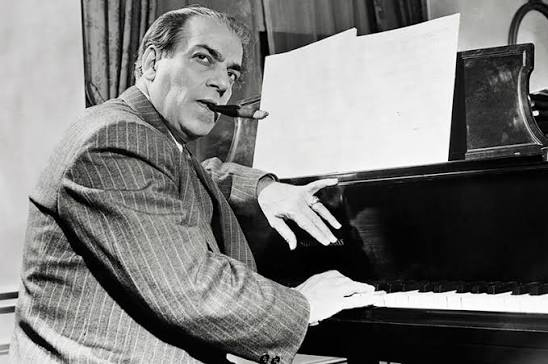
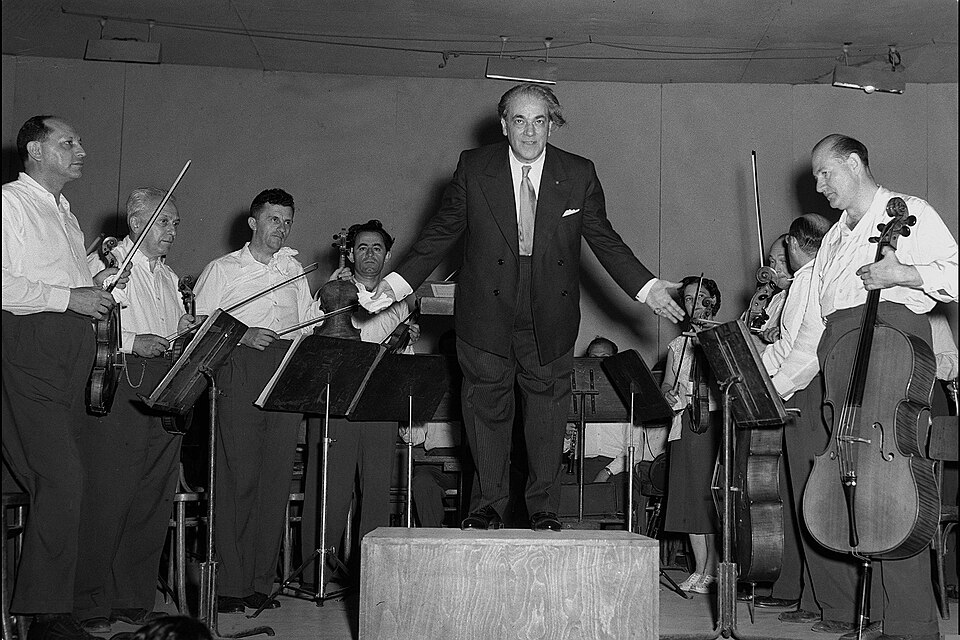

Sobre o Compositor
Heitor Villa-Lobos (1887–1959) foi um maestro e compositor brasileiro conhecido por incorporar elementos do folclore nacional à música erudita. Suas composições destacam-se pela riqueza de ritmos e melodias inspiradas nas tradições populares do Brasil.

Principais Obras
- Bachianas Brasileiras: Série de nove composições que fundem a harmonia de J.S. Bach com o folclore brasileiro.
- Chôros: Conjunto de peças que capturam a essência da música de rua carioca.
- Danças Características Africanas: Peças que exploram ritmos e influências da cultura afro-brasileira.
